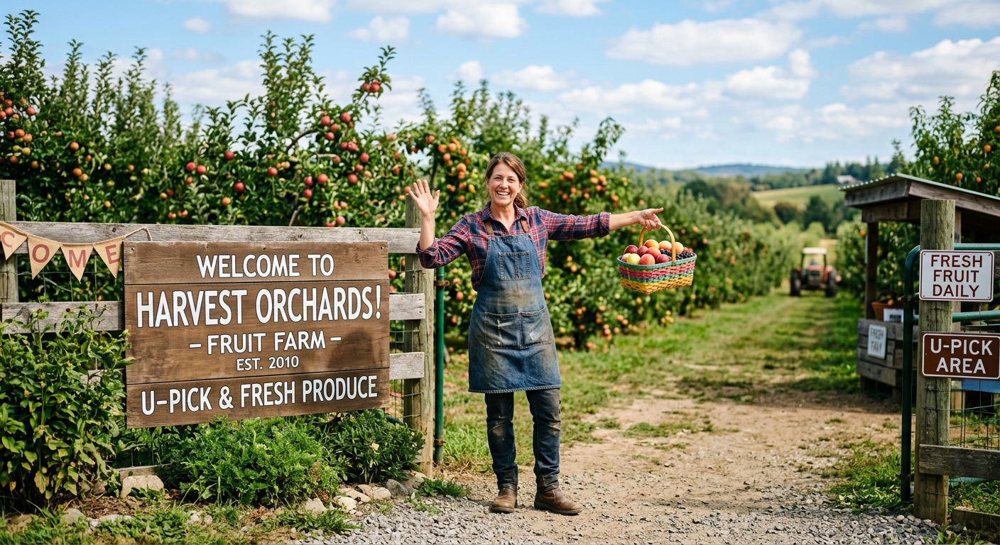

Image: PlaceholderTropical Fruit Studies is a playful placeholder subject celebrating the delightful variety, color, and texture of fruits from around the world.
You should expect to dedicate 10 hours per week to this module:
3 hours of facilitated study:
Attending classes (face-to-face or online) and engaging with your facilitator's feedback.
7 hours of personal study:
Pre-reading and reviewing learning materials, progressing on assessments, and completing learning activities.
Before attending facilitated sessions:
Work through the essential learning resources and activities so you can participate in discussions and complete exercises effectively.
During facilitated sessions:
Use this time to discuss content with your facilitator and peers, ask questions, and get guidance on your assessments. These sessions will also help you explore the module materials in greater depth.
These documents provide essential information about learning resources, assessments, and learning outcomes: